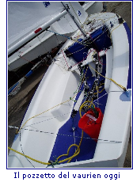
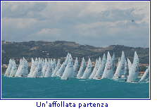

|
IL VAURIEN IN ACQUA
- Luigi Candela - istruttore 2� livello Fiv
Uso il Vaurien soprattutto nelle condizioni molto ventose del lago di Garda. Quando soffia il Peler, tra i 15 e i 20 nodi, questa deriva mi consente di navigare in sicurezza e vengono esaltate le sue qualit� marine.
Lo scafo di mt 4,08 ha una notevole stabilit� di forma grazie alla sua costruzione a spigolo nata in origine per l'autocostruzione in compensato marino. I nuovi scafi prodotti in Italia sono estremamente rigidi, leggeri a prua e a poppa. Questi scafi che si sono evoluti sono ormai molto lontani dai primi scafi degli anni '70 e '80. Ci� mi fa ripensare spesso al "coefficiente di Portmouth di 1173" che nelle regate in tempo compensato risulta ormai troppo favorevole.
In navigazione sviluppa ottime prestazione con venti medio-forti e rimane una delle derive pi� governabili quando altre della stessa categoria non lo sono pi�.
Il piano velico classico di mq 8,10 presenta un fiocco piccolo rispetto alla randa che permette una governabilit� buona con vento forte. Con lo spinnaker e vento sostenuto diventa una deriva esaltante.
Il rig ridotto al minimo dal regolamento di classe permette anche ai principianti di armare senza difficolt� scotte e vele.Il pozzetto senza doppio fondo risulta spazioso e di facile accesso anche ad un equipaggio non preparato fisicamente.
Scuffia - Grazie al suo baglio massimo contenuto, mt 1,57, l'equipaggio riesce a raggiungere facilmente la deriva con la barca capovolta e a raddrizzarla anche con poco peso (110 kg tra timoniere e prodiere).
Difetti -
I pregi di questa mitica deriva nata per la formazione velica in Bretagna diventano dei buchi tecnici quando si trova a navigare in condizioni diverse da quelle atlantiche, cio�: vento fresco e onda lunga.
Quindi paga in velocit� quando incontra venti deboli e onda corta pi� di altre derive della stessa categoria.La mancanza del trapezio non influisce troppo per gli equipaggi pesanti ma quelli leggeri devono depotenziare parecchio la randa per tenere questa deriva che deve essere tenuta perfettamente dritta soprattutto con vento medio forte.
|